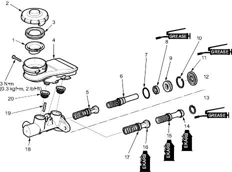

|
- STRAINER
- RESERVOIR CAP
- RESERVOIR SEAL
- RESERVOIR
- PRIMARY PISTON
- SECONDARY PISTON
- O-RING
Replace.
- SECONDARY CUP
Replace.
- PISTON GUIDE
- CIRCLIP
Replace.
- ROD SEAL
Replace.
- DUAL BRAKE BOOSTER
(7 + 8 in.) TYPE
- SINGLE BRAKE BOOSTER
(9 in.) TYPE
- SECONDARY CUP
Replace.
- PISTON CUP
Replace.
- PRESSURE CUP
Replace.
- PISTON CUP
Replace.
- MASTER CYLINDER
- STOP PIN
(ABS only)
- GROMMETS
Replace.
|